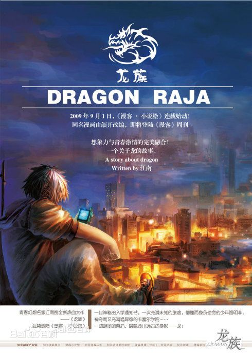

弟弟
The Little Brother
他们此刻奔驰，不知目的地，只是随性，就像男侠女侠发神经踢了人家的场子，从此就决定去浪迹江湖，整个世界在他们背后喊打喊杀。只要跑得够快他们就能跑掉，如果他们骑着“绝影”。
他想记录这个瞬间，记录这次逃亡。
很久以后他才知道所谓“绝影”只是一个传说，布加迪威龙是世界上最快量产跑车，可它跑不过时光，也跑不过早已注定的命运。
13号猫着腰，走在一条漆黑的甬道里，高举打亮的手机，靠着屏幕的光照亮。
这个庞大的甬道系统仿佛一座迷宫，里面只有抽气风扇的嗡嗡声，以稳定的频率重复着。
13号开始有点后悔接了这个差事。
他自负是这一行里的好手，以前接过去探荒漠古墓或者冰海沉船的差事，每一个地方都比这个什么学院灵异。今天运气也算不错，每个难关都被他克服了，总有些巧合的好事，按说幸运女神在他这边。但不知为什么，进入这个甬道之后，他有种奇怪的感觉，似乎说不清道不明危险好像就在前面，脑海里有个念头是不能再前进了，不能再前进了。
他回忆起那个透明如水晶的影子少-女，最后一刻看他的眼神。
像是送别一个死人。
“叮铃铃铃铃铃铃铃……”
手机在这种漆黑封闭的空间里响起，还带振动，差点把他心脏给吓得停跳了，哪家手机服务提供商的信号能够穿透到地下几十米深处？
没有任何来电显示，屏幕上纯然一片淡蓝色。
这台手机不在来电状态！
13号深呼吸了几口，按下接听键，不说话。
“这是一段录音，不是电话，这一切都在我们的计划之中。当然，如果你不幸已经死了，请按下关机键，下面的内容对你没有意义了。”电话里传来没有起伏的声音，就是给他行动指示的女-人。
“死了还怎么按关机键？”13号嘟哝。
“我刚才是说了一个笑话，希望你能理解我是想让你此刻轻松一些。”女-人接着说，但那冷淡的腔调叫人听了只想掀桌。
“请参考地图，根据你现在所在的位置拨号，按‘#’号键结束。”女-人又说。
“拜托，你是‘ATT’的客服电话么？”13号挠头。
一幅完整的卡塞-尔学院地图显示在屏幕上，仿佛一张华美的蛛网。跟13号在图书馆找到的地图不同，这是一张地下剖面图，显示出卡塞-尔学院的地下层建筑由三大片构成，中间无数的连线是连接这三片的通道，连通风管道都被一一标注出来，像是三只巨型蜘蛛喷出的无数丝线。边角上标注着这一层的名字，“三女神”。
“命运三女神？”13号想。
他读过北欧神话。北欧神祉中有这么三姐妹，其中兀尔德纺织生命线，贝露丹迪拉扯生命线，诗蔻迪剪断生命线，这就是世间万物的命运，无可更改。
这些甬道就是地图上的丝线，一个人走在命运的丝线上，多少都有点不吉利的感觉。
他找到了自己的位置，自己正经过一条细长没有分岔的通道，标号“13”。他心里冒出一个恶作剧的念头，想按个其他号码听听指示是什么。不过他又想如果这个重要的录音提示只工作一遍，他就会死得很难看。
他老老实实地按下了“13#”。
“恭喜你，你按照计划到达了指定位置，现在为你揭开三女神的面纱。”
一条白亮的细线从屏幕上方扫到下方，部分通道被扫描滤去，以灰色显示，一些通道仍旧是亮白的，所有建筑物的名字也都被更换了，三个主要的建筑群果真是以命运三女神的名字命名的。13号忽然发现一个规律，那些亮白的通道无不是从标记着“兀尔德”的地方出发，通过“贝露丹迪”，最后去往“诗蔻迪”，而掌管着“未来”的“诗蔻迪”那里……没有任何出路。
这张地图充满浓郁的宿命意味，生命的流动是单向的，从过去到未来，而未来……没有任何出路。
难道这所学院的设计者就根本不相信什么未来？
13号觉得有点惊悚。
“慢着，难道我正去往……未来？”
13号意识到一件事，他所在的“13”号位置恰好是从“贝露丹迪”去往“诗蔻迪”的丝线，那是已经被拉扯出来并且丈量好了长度，等着“诗蔻迪”剪断的。
“通往‘诗蔻迪’，也是通往最终的秘密。这次任务的佣金增加到500万美金。”
13号精神为之一振，500万美金着实是一笔巨款，是原定金额的5倍！做完了这一票，他就可以退休了。他干这个行当可不是为了惩罚罪恶或者探求世界奥秘，而是简简单单一个“钱”字。他是那种自强不息的家伙，没别的特长，又无法忍受靠社会救济过日子。
“相对--湿--度接近100%？是请按‘1#’，不是请按‘2#’。”
锯管散弹枪的枪柄上一层细密的水珠，靴子里棉袜也--湿--乎乎的，手机屏幕上蒙蒙的一层雾气，这里空气--湿--度确实到了过饱和。
13号按下“1#”。
“极高的残余磁场？是请按‘1#’，不是请按‘2#’。”
13号想了想，捋起袖子。机械腕表停动了，停在21：30，他进入这个通道的时刻。毫无疑问，这里有极强的磁场。可13号只听说磁化后的手表会走得不准，却没有听说磁化后的手表会完全停动，除非磁场强到那些齿轮和摆针死死地粘合在一起，再也分不开。
13号按下“1#”。
“空气中有金属生锈的气味？是请按‘1#’，不是请按‘2#’。”
空气中弥漫着一股呛人的铁锈味，13号按下“1#”。
“经过判断，你已经极度接近目标。”女-人说，“继续前进，寻找目标，观察和记录。记住，你必须亲眼见到目标，必须肉眼直视目标！你不用把目标带出，你的报告就值500万美金。看到目标的时候你会收到最后的指示。”
13号的心情登上喜悦的顶峰，居然不需要把目标带出去，只是观察记录报告就值500万，这活儿太值了。他心里的阴影瞬间就被彻底驱散。
“好运，13号。”女-人悠悠地说。
录音结束，13号把手机收在裤子口袋里，继续跋涉。越往前行进，空气越潮--湿--，通道顶部有水滴凝结起来，“啪--啪”地滴落，脚下的积水渐渐地漫过了13号的鞋底。现在他不是优雅的蝙蝠了，只是下水道里的一只水老鼠。
“好运，13号。”他忽然想起那个女-人的最后一句话。
真怪，最后这句话居然是说给他一个人的，原本13号还以为这段录音提示是给队伍中每一个人准备的。
英灵殿。
B组完全控制着这个区域。他们由学生会的骨干组成，多数人都参加了安珀馆的舞会。
时间紧急，黑色的小夜礼服或者白纱宫廷长裙都来不及换下，女孩们把头发盘起来，裙脚简单地一扎，手里提着九毫米口径三十发弹夹的乌兹冲锋枪，右肩挂着填满的备用弹匣，短枪藏在裙下贴着大腿捆紧，脚下居然蹬着嵌水钻的高-跟-鞋。
“哥特美人的华丽！”一名学生会干部从拼花窗里看出去，白色长裙在风里摇曳。
八名在“战场生存课II”中成绩优秀的学生控制前门，八名控制后门，两侧门各有四人，每一扇拼花落地窗下两人，二层通道六人，配齐轻重武器，必要时可以迅速支援。
大厅中，恺撒·加图索，卡塞-尔学院学生会主席，静静地坐在那里，闭目养神。
英灵殿是一座拜占庭风格的古老建筑，坐落在奥丁广场的中央，外面装饰着布满暗红色花纹的花岗岩，传闻这些花岗岩来自印度，曾经有一场流淌过人龙两族鲜血的屠龙战争在那里发生，鲜血渗透进当地的花岗岩层，几百年后采石场发现这里的花岗岩色泽与众不同，肌理中满是血色。而完整的世界树图案被雕刻在整个外壁上，顶部矗立着一只雄鸡，底层则镇压着一切龙族的祖先，黑龙尼德霍格。
它在卡塞-尔学院中是一个类似圣堂的地方，用来颁发学位证书。这里通常每年仅仅开启一次，学生们身穿普鲁士宫廷特色的学位袍进入，坐在一排排橡木长椅上，等待校长念到他们的名字，在所有人的掌声中登台接受学位。两侧墙壁上，挂满了历代屠龙战争中为人类建立功勋的英雄头像。
恺撒坐在最前排的椅子上，穿着考究的白色正装，仰头对着圆形穹顶下的雕塑。
浑身甲胄、骑着八足战马、手持长矛的天神奥丁。
猎刀狄克推多静静地躺在恺撒的膝盖上，填满子弹的一对“沙漠之鹰”则放在旁边的座位上。
他闭着眼睛，嚼着嘴里的牛肉条，嘴角露出了一丝淡淡的笑。
整个英灵殿，以及英灵殿周围数百米半径内的一切声音都回响在他的脑海里，包括蚊子在空气中磨翼、小虫在泥土中蠕动，以及他指挥的整整四十六人的四十六个节奏不同的心跳。而现在忽然增加到五十八个，就在刚才的一瞬间，十二个陌生的心跳进入了恺撒的领域。
言灵·镰鼬。
恺撒睁开眼睛，摸出手机拨号。
“楚子航，你现在在干什么？”恺撒问。
“不知道，没什么可做，只是等待吧。”楚子航的声音从电话那一头传来。
“我的客人已经来了，你的呢？”
“该来的终究会来。”
“谁会先结束战斗？这一次要赌点什么呢？”
“自由一日你输掉了跑车，我输掉了刀，这两份赌注都还没有交给赢家路明非，有什么必要继续赌？”
“有道理。”恺撒想起他停在车库里的布加迪威龙，在他的概念里这台车仍旧老老实实地呆在他的车库里。
他有点沮丧，不是吝惜车，而是实在不太好意思把这台车开到路明非面前交给他。他本来计划如果路明非顺服地上台和他并肩站立，他就洒脱地从口袋里摸出车钥匙拍在他手心里，说这玩具原本就该是你的。那一刻恺撒心情也有点紧张，如果路明非不接受，那怎么办？
楚子航挂断了电话。
恺撒重新低下头去，闭上眼睛，双手支撑额头。
教堂。
这是C组的区域。C组的人数远少于B组，但更加精锐，二十人全数都是狮心会的成员。
狮心会的精英是这所学院的老牌劲旅，拿到毕业证时，执行部的门就直接对他们敞开。这些精英并不驻守在固定位置上，而是时刻保持运动。对于想要侵入这栋建筑的人来说，他们会发现每个时刻都有不同的小组封锁着某个入口，小组间的配合经过无数次演练，天衣无缝。
一扇雕花的屏风后面，是卡塞-尔学院教堂的忏悔室，楚子航一直呆在里面。
黑色的身影从二楼跃下，担任狙击手的苏茜靠近了忏悔室。她二十一岁，三年级，A级，主攻方向是龙族基因学。她是狮心会的重要成员，副会长，还是诺诺的室友，因而很出名。人们把楚子航和恺撒对比时会顺带把诺诺和苏茜对比，两个女生保持着日常生活中的和平，以及团队立场上的极端对立。
“没事吧？”苏茜敲了敲忏悔室的门。
“没事。恺撒那边就要开始了，这里应该也快了。”楚子航在里面说。
“你的身\_体……”
“很好，没有任何问题。”楚子航打断了她。
“C组收到请撤离教堂区域，C组收到请撤离教堂区域。”C组公共频道中传来施耐德教授的声音。
“是！”所有人同声回答。
他们已经养成了服从的习惯。相比学生会，狮心会和执行部的关系更近，狮心会的成员可以说都是执行部的预备队。
“子航！撤离。”苏茜又去敲忏悔室的门。
她对这条命令有点不解，教堂是通往三女神层和守夜人所在的钟楼的核心枢纽，本应集中人手警戒。
“不，不包括我。”楚子航低声说。
“不包括你？”苏茜愣住了，“是通过公共频道对所有人下达命令的。”
“C组收到请立即撤离教堂区域，不包括楚子航。”施耐德教授的声音再次响起，楚子航似乎对于这条命令早有预期。
“这条命令仅仅针对不需要参加教堂战斗的人。”楚子航说，“苏茜，撤离。”
楚子航从帘子后伸出手来，紧紧握了一把苏茜的手腕，他的手白皙、修长、温暖，而且有力。
“别担心，不出意外，过两个小时我们可以一起吃宵夜。”楚子航说。
“这是一个约定么。”苏茜把手覆在楚子航的手上。
“是。”
施耐德教授盯着大屏幕，代表C组的光点撤离了教堂，沉重地叹了口气。
“留楚子航一个人在那里？”古德里安教授对这个命令很吃惊，“对于一个二年级学生来说，责任太大了！”
“楚子航的导师是谁？”施耐德问。
“你啊。”
“对，我是楚子航的导师，”施耐德点了点头，“所以我知道自己学生的能力，‘戒律’已经被解除，学生们的言灵被解封了。他们是群草原上的野马了，有无限可能。”
“楚子航的言灵……是什么？”古德里安意识到了什么。
施耐德迟了一瞬，口气变得极其冷硬：“言灵档案只有学生的导师和校长有权查阅，你们没有资格问这件事！”
“楚子航的言灵……很危险？”曼施坦因站在施耐德背后，把手搭在他肩上，目光森严，“你让C组其他人撤离那里，是不希望别人知道楚子航的言灵。那些人都是狮心会的人，不会轻易泄露秘密，但是你仍旧不希望他们知道楚子航的言灵……因为它很危险，是么？”
“重复一次，你们无权过问！”施耐德面无表情。
“你从没有对风纪委员会汇报过这件事！别说蠢话，一般教授无权查看言灵档案，我却能以风纪委员会的名义申请特权！你忘记了校规了么？见鬼！”曼施坦因大声说，“施耐德！你是执行部的负责人，你该明白我们的学生都是些什么人！他们拥有人类和龙族的双重血统，在领域内下达命令，就会改变自然规则，这些能力有多危险，被许多案例证明过。你还记得那个被我们称为‘吞枪自杀’的学生到底是因为什么而死的么？”
“我对校长报告过这件事，校长默许我对此保密。”施耐德低声说，“曼施坦因，就算你帮我忙，忘记这件事，楚子航的言灵还在我的控制之中。”
“该死！不是你能否控制的问题！所有危险的言灵能力按照校规都要被立案存档，仅仅告诉校长是不够的，校长也无权默许你！这件事如果我保持沉默，校董会知道之后，违反校规的是你我校长和古德里安四个人！”曼施坦因愤怒了，“现在可以控制的，你怎么能保证它将来不会失控？不准备预案怎么可以？”
施耐德沉默了许久，深深地吸了口气：“楚子航……是个好学生。”
“这和他是否是好学生无关！”
“一旦被鉴定为言灵能力有风险，就会被从所有学生中隔离，是不是？”施耐德看着曼施坦因的眼睛。
“是。”
“我相信楚子航是个好学生，努力适应着他的能力，成为我们的一员。我们每个人都体会过‘血之哀’带来的孤独感，他就是为了克服这种孤独感而来到卡塞-尔学院，我想不到什么理由阻止我帮助他。”施耐德低声说，“我曾因为危险的言灵能力被隔离，我尝到过那种痛苦。你们也尝到过，在儿童精神病院中，是不是？”
屋子里安静下来，曼施坦因和古德里安看了看彼此，都没有说话。
“楚子航是个好学生，就像路明非是个好学生一样，白王血裔的事情，我完全没有听到过。”施耐德凝视他们两人，铁灰色的眸子透着冷光。
“什……什么白王血裔？”古德里安的舌-头似乎打结了。
他的心里其实一直有个阴影。他没看过路明非在3E考试中的答卷，诺玛评分之后直接把结果汇报给校长，校长也亲口宣布了他通过3E的消息，这等于认可他的血统。但这无法解释路明非对“言灵·皇帝”没有反应，他在考试中与各种高阶言灵共鸣，却对作为黑王血统象征的“皇帝”不为所动。
他不臣服于“皇帝”。
被载入史册的龙类中，不臣服于“皇帝”的只有白王血裔。
但古德里安没有说出来，曼施坦因也不再提这件事，整个卡塞-尔学院，他们两个在龙族谱系学上的研究最深入，他们如果“恰巧一起”忽略了这个细节，本不该有人再关注。施耐德也不该关注，那天晚上施耐德看起来是相信了曼施坦因的解释。按照施耐德的性格，如果他有疑点，必然会提出，不会藏着。古德里安渐渐放心下来。
“曼施坦因，你并不是个很善于撒谎的人，理由编得很好，但是你的目光游移，暴露了自己。古德里安撒谎的习惯是会抓头，你撒谎的习惯是会往右下角看，你们不愧是一个精神病院出来的，坏习惯都类似，你对他的嘲讽用句中国俚语说，‘五十步笑百步’而已！”施耐德看着曼施坦因的眼睛，“在你离开图书馆之后我立刻返回，调出了文献室的监控录像，原原本本地看完了你们两个的争执，然后销毁了那段录像。”
曼施坦因默默地在桌边坐下，扭头看着自己的老友古德里安，“身为风纪委员会主任，这样违反校规也不会被校董会原谅吧？”
“我能原谅。”施耐德低声说，“我们三个可以有默契。”
“你是说？”古德里安眼睛一亮。
“你的好学生路明非和我的好学生楚子航，他们都很好，很努力，很正常，他们应该在这个校园里接受最完备的教育，而不是作为异类被隔离，他们会成为卡塞-尔学院乃至人类的英雄。”施耐德说得极慢，“是不是这样？”
古德里安和曼施坦因看着彼此，一瞬间没有反应过来。
“是这样！毫无疑问是这样！”古德里安忽然明白了，站起来大声说。
“很好，那样我们都是出色的导师了。”施耐德那张布满疤痕的脸上露出难得的笑容，“风纪委员会主席也同意我们的看法吧？”
“嗨！你们都是出色的导师和我又有什么关系？路明非是古德里安的学生，楚子航是你的学生，这件事原本跟我就毫无关系的对么？”曼施坦因抗议，“我却神奇地被卷了进来，还要陪着你们撒谎？这样我很吃亏，不是么？”
“也不算吃亏，因为你有个新学生，据我所知，她的言灵档案也很异常，只是一直被校长压着，没有深入研究过。”施耐德拍了拍曼施坦因的肩膀。
“谁？什么新学生？”曼施坦因愣住了。他是少有的没有带学生的教授，只是代课，因为他兼任风纪委员会主任的职务，这本来就很忙了。
“陈墨瞳。”施耐德缓缓地吐出这个名字，“她的前一任导师曼斯指定你为她的下一任导师。你想知道她的言灵档案么？”
“曼斯……为什么指定我？”曼施坦因愣住了。
“两个原因，首先，她跟古德里安做校园兼职，而你是古德里安的朋友，你势必会照顾她；其次，你的风纪委员会承担的责任之一就是监控言灵，你有查看言灵档案的特权，如果你是她的导师……你这个人虽然又贪财又尖刻，但是你非常没有立场……”
“贪财尖刻没有立场……你到底想说明什么？”曼施坦因无奈了。
“你会袒护身边的人，这是你的习惯。根据档案，陈墨瞳……没有言灵！”施耐德缓缓地说，“一个‘A’级学生，曼斯却说她没有言灵，连‘F’级的芬格尔都有言灵，而且曼斯阻止了对她的调查。只有一个原因能解释吧？她的言灵很特别，特别到曼斯无法把它写入档案。曼斯很喜欢他这个学生，你们都清楚。”
“该死……我已经很忙了，为什么要把她交给我？还有，我为什么要保护这个学生？我大可以如实写一份报告交给校长。”曼施坦因说。
施耐德深深地吸了一口气，幽幽地说：“你是不会对陈墨瞳不好的，就当是完成她母亲……对你的嘱托吧。”
曼施坦因沉默了很久，没有说话。
“你没有言灵？”路明非很好奇。
他和诺诺正在回学院的路上。诺诺开车，车内音响里一个女-人快活地唱着“斗呀斗呀斗地主”。诺诺的MP3里有各种各样奇怪的歌，说唱乐、北欧神秘主题、圣咏，还有这首烂大街的“斗呀斗呀斗地主”。看了烟花后两个人都乐颠颠的。
诺诺说自己收藏音乐的方式好比一个收垃圾的，背着一个篓子走在大街上，看到好的就收到自己的篓子里去，从不分类，也不组织。等她有空的时候就把篓子倒过来，把收来的好东西翻了一地，这边看看那边看看，完全没什么规律。路明非赞赏诺诺的收藏方式，他自己也曾对于收垃圾这种毫无责任感的生活充满向往。
“真的没有，虽然很多人不相信。”诺诺耸耸肩，“我对龙文有共鸣，可是我没法驾驭言灵，曼斯教授也很头疼。”
“一共有多少种言灵？”路明非歪在副驾驶座上，看着风把诺诺的长发吹得如一蓬暗红色的火焰。
“迄今记录在册的言灵一共有118种，它们组合在一起，可以组成一张类似元素周期表的东西，序列号越高的言灵越不稳定，越危险，使用时对于释放者的反噬也越重。”诺诺说，“这些会在下学期开的‘言灵学入门’课上教。”
“那最牛的言灵是什么？”
“不知道。序列号在88位以后的言灵都不稳定，89到100位评级是‘危险’，101到112位评级是‘高危’，113位以后评级是‘绝密’。”
“绝密？”
“是说113位以后的言灵即使曾经被观察到，也不会公开资料，它们的危险性不可估算。我知道的最危险的言灵是112位的‘莱茵’。19世纪在通古斯被人使用过，一支屠龙者组成的小队进入通古斯，没有人或者离开，在那里观察到一次类似核爆的冲击波，数百顷的林地倒伏，发出的光亮远至莱茵河都能看到。所以被称为‘莱茵’。研究部推测‘莱茵’始终消耗极大的言灵，仅仅维持了0.003秒，释放者在瞬间就被彻底耗尽。”
“通……通古斯大爆炸？”
“嗯，这个事件在卡塞-尔学院的名称是‘莱茵燃烧’。”
“这样拽的力量还只能排112位？”路明非傻眼了，“那118位的言灵是什么？看来只有二十倍的界王拳了啊！”
“不，绝对是超级赛亚人变身啦！”诺诺摇头晃脑地和他一起说烂话。
“你们有龟波气功这样的言灵么？”路明非比了个姿势，“看我看我，就是这样。一个人开车，一个人坐在副驾驶座上放龟波气功，不就是一辆坦克了么？轰！”他双手对着前方推出。
诺诺想象了一下路明非描述的情景，忍不住笑出声来，方向抖动。
“小心小心！不要乐极生悲啊啊啊啊！”路明非大叫。
两个人一阵子不再说话了，漆黑的山路被车灯照亮，野枭的叫声在高空中掠过，他们开着一辆跑车，男孩穿着租来的正装，女孩穿着紫色的套裙，风迎面浩荡地吹来，-撩-起他们的头发，男孩的头发散乱，女孩的头发飘逸，山腰里正在打打杀杀，他们车里放着快乐的“斗呀斗呀斗地主”。
“师姐，你的手机能不能照相？”路明非忽然问。
诺诺说着把自己的iphone扔给路明非：“不要偷看我的短信啊。”
“来来，合个影。”路明非挥舞着手机说。
“喂，不要作怪！山路时速六十公里，怎么合影？”
“你不方便动我侧身就可以了嘛。”路明非转过身，一厢情愿地半靠在诺诺身上，把一只手远远地伸出去，握着手机自拍。
他想这样的时间不知道他的一生里会有多少次，世界上其他的事情都被飞快的跑车抛在背后，以其他人的打打杀杀为背景，一男一女奔驰如电，大声说笑，像是逃亡，又像是私奔。
他听说过曹操有一匹好马叫做“绝影”，快得连影子都追不上它，路明非于是想着那匹马应该是全身金色的皮毛，永远奔跑在阳光里，光与暗的分际永远在它背后，每当黑暗就要追上它，它便会再一次发足狂奔。可是他打三国无双的时候发觉这匹马居然被画成了黑色。
他们此刻奔驰，不知目的地，只是随性，就像男侠女侠发神经踢了人家的场子，从此就决定去浪迹江湖，整个世界在他们背后喊打喊杀。只要跑得够快他们就能跑掉，如果他们骑着“绝影”。
他想记录下这个瞬间，记录这次逃亡。
很久以后他才知道所谓“绝影”只是一个传说，布加迪威龙是世界上最快量产跑车，可它跑不过时光，也跑不过早已注定的命运。
他按下快门的瞬间，诺诺从方向盘上腾出一只手使劲捏住路明非的鼻子，同时飞快地扭头吐出舌-头做了个鬼脸。
“咔嚓”一声过，路明非吃惊地瞪大眼睛的脸被定格在闪存的某个小点上，诺诺的胳膊横过他的脖子捏紧-了他的脖子。
13号仍在跋涉，他得准备游泳了。通道开始倾斜着往下走，上方凝结的水滴劈里啪啦往下滴落，他简直像是走在一场暴雨中。水深没膝，每走一步都很费力气。前方有红色闪烁的灯光，13号猜测自己快走到头了。
他脚下一空，失去了支撑，身\_体完全浮在水中。水冰冷且有咸味，像是海水，好在干净透明。13号深吸一口气，一个猛子扎了下去。他扎完这个猛子立刻就后悔了，散弹枪的弹药--湿----了水肯定没法用了，更糟糕的是那部手机。
他赶紧钻出-水面甩掉手机上的水珠，猛摁开机键，不过显然水已经把电池给泡透了，无论他怎么摁，都没有一丝一毫的反应。这部手机是任务开始之前雇主直接邮寄给他的，只是普通的货色，并不值钱，可是还有最后一条指示没有收到，接下来只有自己闯了。
反正只是找到目标然后写份报告嘛！要说写报告13号还是有一手的，他锻炼文笔的方式是在一些即使战略游戏网站写战报。
他把手机扔进水里，又一个猛子扎了下去，缓缓地向着红光闪烁的地方游去。
手机慢慢地沉入水中，卡在了一处裂缝中。
13号终于找到那盏闪烁的红灯了，它在一台老旧的闸门设施旁。闸门位于通道的尽头，黄铜质地，锈蚀得很严重，边角上用德文钢印标记着时间和当初铸造这扇闸门的工厂名字，年份是1912年，接近一个世纪以前。那时候德国的铸造工艺是世界上最先进的，这东西越洋运到美国来，想必价格不菲。
1912年，很久很久以前了。
13号握紧闸门把手，想着打开闸门会看见什么，那种讨厌的感觉又出现了，似乎打开这么闸门，就有什么糟糕的事情发生。
就是那种分明一切都很正常，但是很想放弃那500万美金，掉头沿着来路逃走的感觉。
“哥哥。”
他全身起了鸡皮疙瘩，猛地回头。背后什么人都没有，只是荡漾的水声。是幻听么？他没有弟弟，是个从头孤到脚的孤儿。
他靠在闸门上，不小心压下了把手。
“啊！”他惨叫起来。
闸门洞开。瞬间，他失去平衡，随着几十几百吨咸水下坠，像是乘着小皮划艇冲出了尼亚加拉大瀑布。13号紧紧闭上眼睛，直到“噗咚”一声，周身被气泡裹住。他落进了水中。
13号慢慢地睁开眼睛，四下张望。他浸在淡蓝色的水中，高耸的玻璃墙壁把水包围在其中，玻璃墙壁中嵌着冰蓝色的灯，光在这个玻璃和水组成的世界中折射变化。看起来有点眼熟。
“水……水族馆？”13号明白自己坠入了一个水族馆的池子里。
他也曾光临过布鲁克林区的水族馆，陪高中班里那个喜欢海洋生物拉拉队长看海龟，不过之后拉拉队长再也不跟他约会，他于是也不再去水族馆了。他现在是以一只水族馆海龟的视角来看这个水族馆，和从外面隔着玻璃看是两种不同感觉。
“这么大池子，是养海龟的么？还是……”13号忽然一哆嗦，他发觉这个池子太大了。
“鲨鱼？”这是那句话的后半截。
13号慢慢地转身，背后一双乒乓球大小的眼睛正好奇地盯着他。一条真正的大白鲨，大概是为了证明自己是只年轻有咀嚼能力的鲨鱼，大白鲨缓缓张开嘴，露出荆棘密布的牙齿。
“有种……来啊！”13号哆哆嗦嗦地说。
鲨鱼没有扑击，缓缓地摆动鳍和尾，不是在前进，而是在无声地后退。它和13号之间的距离慢慢拉长，像是一头恶狼在面对一只野猪时有计划的撤退。距离大概拉长到10米时，大白鲨猛地转身，高速潜入水下，一头钻进人工石礁洞里。转瞬间，红色的血雾从石礁洞里涌出上浮，然后是一条被咬死的大鱼被扔了出来。鲨鱼咬死了那条大鱼，占据了它的洞-穴-，像是为了避险。
“就说你没种嘛！”13号喘着粗气。
这是他天生的能力，也是他被美\_女拉拉队长厌弃的原因。一切动物都不敢接近他，从兔子直到海龟，小时候他拿着胡萝卜站在兔子笼边几个小时，兔子也只是缩在角落里一个劲儿地喘气。
“我是个让人讨厌的人吧？”13号小时候一直很自卑。
但这一次他非常感谢这个特质。
他奋力地游到玻璃墙边，射绳枪再一次发挥了作用，他拉着绳子翻了出去。
“卡塞-尔学院，七号水生态池，主要栖息种类：Pliosauroidea。”他读着玻璃墙上的标志牌。
13号对于来源于希腊文的“Pliosauroidea”毫无概念，所以他简单地认为那是大白鲨的生物学分类名，于是也弄混了巨大的海水池里到底谁是猎物，谁是捕猎者。他并未见到水池里真正的主人。
他在玻璃墙之间的通道中小心翼翼地穿行，不知道走了多久，终于在海底通道的尽头看见了指示牌，
“冰窖”！
队长默默地站在英灵殿的拼花窗边。
他身边不远，两名手持乌兹冲锋枪的二年级学生睁大鹰隼般的眼睛看向窗外，以备迎击随时来袭的敌人，却对身边聚集成团的十二个人完全没反应。即使他们集中精神观察，也只能看见空气里有缭乱的淡墨色风流过，仿佛幽灵。
十一个人紧紧地贴着队长，恨不得黏在他身上。他们就是这样紧贴在一起，小步挪动进入英灵殿的。
这样走路非常难受，但他们没有更好的办法，“言灵·冥照”的领域只是释放者身边两米半径的圆，他们攒在一起，像是朵以队长为花蕊的花。
队长看着墙上并排挂着的两幅照片。
“叶胜，卡塞-尔学院执行部，助理专员。1985.03-2009.10。”
“酒德亚纪，卡塞-尔学院执行部，助理专员。1986.12-2009.10。”
照片上的男孩和女孩都是亚洲人，男孩长着一张阳光灿烂的脸，下撇的嘴角带着一丝坏笑，女孩脸庞柔和眼瞳温润，柔软的额发覆盖着额头，一副邻家少-女的模样。两张照片是从同一张毕业合照一类的大照片上裁下来放大的，一样的学士服，一样昏黄的阳光为背景，背后的远景就是这座古老神秘的英灵殿。
其余十一人并不明白队长为何会停下来浏览历代屠龙英雄的照片。但他们也只能等着，队长的脾气他们都知道。
队长无声地叹了口气，沿着中央通道走向奥丁雕像，极淡的黑色气氛沿着中央过道流动。
B组所有人都把目光对准外面，除了橡木长椅上闭目养神的男生，他穿着一件白色正装，一头灿烂如金子般的头发，手里按着一柄黑色的猎刀，旁边搁着两柄巨大的、银色的“沙漠之鹰”。那是两柄订制手枪，握柄处是雕花的乌木镶嵌象牙，纯银的家徽位于握柄的正中。
那头金发真是太耀眼了，队长从后面接近的时候很想一巴掌拍在他脑袋上，摸摸看是不是假发。
但他遏制了这个念头，无声地经过，男生低着头，似乎什么都没有觉察，嘴角带着淡淡的微笑。
这是一次毫无挑战的突袭，太过轻易的成功总让人觉得有些无趣。队长和同伴们站在了卡塞-尔学院引以为傲的英灵殿中央，站在了奥丁雕像下方的黑色天鹅绒帷幔前，可是敌人却在打瞌睡。队长有种要教育一下年轻人什么才是专业精神的冲动。
恺撒睁开眼睛，抬起头，对着奥丁雕像微笑。
这个希腊雕塑一样的男生笑起来有种介乎典雅和冷酷之间的感觉，首领吃了一惊。
恺撒直视着这群人，但是历练过无数次的“言灵·冥照”给队长足够的信心，在黑色背景下，人类的视力绝对不够发现“冥照”留下的些微黑色气流。
“我们这一届颁发学位的那一天，我会是第一个走上讲台的么？”恺撒随口说。
队长不知他是在问谁，也许是他背后的奥丁雕塑。
被察觉了么？以他的性格是不在乎一战的，不过此刻到底有没有被发现，是否需要解放言灵跳出去一战，这是个问题。如果恺撒只是一时兴起自言自语，他跳出去一战显得愚蠢了。他有点踌躇。
音乐声忽然刺破了宁静。
英灵殿里回荡着一首宏大的曲子，声音不高，但是足够让每个人都听见。所有人都诧异地扭头看向奥丁雕像，却找不到乐声来自何方，悠扬的曲调像是校园播音系统在下午茶时候的节目。
“Ashitaka Sekki，宫崎骏《幽灵公主》的配乐，我也蛮喜欢的。”恺撒淡淡地说。
黑色帷幕下的音乐停止，随之女孩气恼的声音，“喂！哪位？现在打电话来，你是找死么？”
言灵·冥照，解放。
十二个人同时现身。他们穿着没有标记的黑色作战服，手持微型冲锋枪，腰间佩戴两尺长的近身刀，头罩面罩俱全，只露出两只鹰隼般的眼睛。
B组第一时间辨认出这些就是侵入校园的人，而且显然是精锐中的精锐。他们本该立刻开枪，却愣住了。对方摆出了奇怪的阵形，十一个男人围绕在唯一的女-人身边，猫着腰，手挽着手，像是非洲部落跳什么求偶舞蹈。
“滚！这时候还贴我那么近干什么？”队长，这队人中唯一的女-人，一把按在一名同伴头上把他推了出去。
十一人立刻分散，瞬间进入了战斗状态，以周围的排椅和讲台作为掩蔽物，举起了微型冲锋枪。同时，B组位于前后门的主力人马蜂拥而入，顶楼的栏杆缝隙中伸出了乌黑的枪管。
天罗地网。
双方上膛的声音整齐像是训练过，只要扣动扳机就有子弹倾泻而出。但同时，恺撒和女-人都举起了手，阻止了进一步的行动。
恺撒优雅地比了一个手势，示意队长可以打完电话。队长看都没看他，一边通话，一边用手梳理着漆黑的长马尾辫。
“绿森林？我们认识么？你从哪里得来的我的电话号码？”队长对着手机怒叱。
“哦……”她似乎想起了什么，往恺撒这边看了一眼，“是，我通过Mint会所订过你们的服务，但是我预订服务的时候并没有要求电话回访。”
“什么？Nono？”队长皱眉，“No！你们没有一个听力好些的客服专员接电话么？你们以前没有来自亚洲的客户么？你们的拼写简直是……好了好了，我现在很烦，请不要浪费我和客户……啊不……和竞争对手相处的时间。告诉你们的市场部！他们需要一些懂中文的人了！否则就把你们公司名字中的‘International’字样拿掉！”
她狠狠地摁键，切断通话：“我最恨做事不专业的人了！”队长对恺撒耸耸肩，“真受不了这种所谓的财富会所，居然泄露我的号码。”
“Mint会所么？我也是会员。”恺撒摸出了钱包，从里掏出一张印有银色“Mint”字样的黑卡。
Mint，著名的财富会所，服务于顶尖的高端人群，如路明非这类穷狗连名字都没有听说过，在戛纳、香港和上海设有分所。拥有它的会员身份可以满足人类能力所及之内的一切需求，举例说，你在纽约下午六点钟吃完了晚餐打了个饱嗝忽然想到要飞日本看今晚东京歌舞伎座剧场的表演，虽然按照道理说没有任何一班航班能把你按时送到，而且今晚东京歌舞伎座剧场的站票都卖光了，不过没事儿，打个电话给Mint。然后喝完咖啡出门上车，一架协和式客机会在机场等你。
这个就是Mint了，很合恺撒的风格，也很合队长女孩的风格。
紧握武器的双方精英对视一眼，这个时候双方的负责人居然就某个财富会所的服务开始了对话。
“没办法，事情虽然简单，可是老大要求的时间太短，不打电话给他们看来是搞不定了。”队长无所谓地耸耸肩，“不用给我看你的卡，也不要指望通过会所找到我。”
“我只是好奇我们的对手到底是谁，龙族，会是一群通过Mint消费、脾气很不好的女-人么？”恺撒端详着首领的脸，“你看起来很面熟。”
“酒德亚纪的姐姐，酒德麻衣。”队长看了墙上的照片一眼，“你应该见过我妹妹。”
没人会否认她是个美人，万里挑一的美人，即便以对手立场。穿上高-跟-鞋身高可能会压过恺撒；紧身作战服把全身曲线精炼出来，如果她是素描课的模特，老师和学生都得在两只鼻孔里插上纸卷画画，漆黑的长发在脑后扎成马尾，像个剑道少-女那样露出白皙修长的后颈；一张总带着“唉，怎么那么麻烦”表情的明艳脸蛋，淡淡扫了眼影的眼角修长，如同绯色的刀锋。
和清丽的酒德亚纪比起来，姐姐的艳丽如画家笔下的一抹酡红。
“不是孪生姐妹吧？”恺撒鉴赏了片刻。
“孪生，从生物学角度说，不是同卵双胞胎而已，否则她也不会是那么个丑小鸭，总是对自己没信心。”队长嘴里说着仿佛无关自己的话，扭头看着窗外。
她有点不开心了，这让她的美丽显得多了几分真实，这副表情让四周举枪的男生们都有点不好意思对她开枪。
“把脸遮起来也不愿意？坦然公布身份也没关系？看起来卡塞-尔学院真被人看作可以常来参观旅游的地方了。”恺撒说。
“以前试过蒙面，可是效果不大，”麻衣习惯性地耸耸肩，“别人对我身材的印象超过对我的脸，我总不能全身罩在阿拉伯长袍里。”
恺撒微微点头：“是，尤其是男人，没法不印象深刻。”
对于麻衣来说，太过完美的外貌才是她最大的缺点，即使让在场全部女孩穿上白色宫廷舞纱裙并排站着，麻衣也会以傲视全场的身材，第一时间吸住所有男人的视线。
“好了，你到底想说什么？开打吧。”麻衣有点失去耐心了，撇了撇嘴，“不要指望我因为失去妹妹的悲痛会有什么漏洞，我和亚纪从小就不生活在一起，所以我们没有什么姐妹感情。而且我跟那种丑小鸭，是完全不同的。”
“看得出来。”恺撒点头，“准备怎么开始？”
麻衣掏出自己的手机放在旁边的讲台上，“像西部片那样如何？音乐结束，我们开始。”
“Ashitaka Sekki？”恺撒问。
“嗯，Ashitaka Sekki，你熟悉我也熟悉，结束的瞬间，开始。”麻衣按下了音乐播放键。
恺撒起身，解开正装的扣子，双手提起“沙漠之鹰”。麻衣扬起眉，她忽然亮了，璀璨如冷厉的刀光，令人悚然不敢靠近。两人各自的身后都有超过十支上膛的枪指向对方，上千枚压入弹仓的子弹。
乐声响起，仿佛在万年森林的深处，无数萤火虫飞舞，精灵们唱着古老的悲歌，那么多那么多的孤独和悲伤，汇合成山一般的宏大。
“这一首的长度是2分39秒，距离你们最近的C组赶到这里还需要4分钟，你觉得在音乐结束后的1分21秒内我们谁能站着？”麻衣看着恺撒冰蓝色的眼睛，她身上那股汹涌的、刀一样的气息在提升。
“不会有人支援这里，除非我倒下。每个人仍旧会在自己的位置保持警戒，封锁所有去向三女神层的入口，我们不会中什么声东击西的诡计。根据监控录像，你们有十三个人，而这里我只看到十二个。”
“真敏锐，但是不太准确，还有两个人。施耐德教授对于你罩得住这里真是有十足的信心啊。”
“能否告诉我剩下的两个人正去向哪里？”
“一个去教堂方向了，还有一个好像正在迷路中。”
音乐仍旧继续，提琴部和管乐部的配合中，精灵们高唱着泪花飞溅，萤火虫四散飞舞，胡弓的声音破围而出，无奈的情绪如堆积在云顶的高山，孤独的孩子提着无法指引来路的灯。
双方的负责人慢悠悠地说着话，似乎都有些被乐声吸引，有些漫不经心，横亘在两队人之间的杀气开始弥散。
“谢谢。”恺撒微笑。
“告诉你也没有关系，你已经来不及做什么了。因为下达命令的那股女-人，虽然她永远只是嚼着薯片远程发号施令，看起来嘻嘻哈哈，其实内心里是个地地道道的女王，下的命令毫无逻辑可言而且要求你100%执行，但是她从未在策划上犯过错误；而现在去找楚子航的是个三无零度少-女，虽然她永远冷着一张脸，永远没法跟任何人合作，但是我所知还没有什么交给她的事情她完不成的。”麻衣耸耸肩，“相比起来你真的要庆幸，我是这个团队里最好打交道的人了。”
“你们的目的是什么？”
“龙王诺顿的骨骸。”
“真坦白，还有么？”
“新时代。”
“新时代？你们自诩为革命者么？需要一个像明治维新后的日本那样的……新时代？”
“远比那，要新得多。”麻衣轻声说，她漂亮的眼睛里忽然流过一层雾一般的朦胧，雾后却是令人震惊的瑰丽。
“看着一双美丽眼睛里流动着对那个时代的向往，不由得让人也期待啊。”恺撒垂下头。
他开始默数了，音乐已经冲过了最后的高潮，最后的长音将维持15秒钟，就像是沉默了几千年的守林人用他皱纹密布的双眼看着没有尽头的路。他有点庆幸自己在喜欢普契尼之余也研究过日本动漫音乐。
音乐仿佛被利刃截断！
十一柄枪发射的声音如同一响，每一柄枪都准确地发射了两次三连击，一共66发子弹离膛。音乐是骤然结束的，根本不是预想中的15秒绵绵长音，酒德麻衣版的Ashitaka Sekki，是以一段高亢的进行曲结束。
B组的学生扣动扳机之前，皆有一枚子弹射向他们，对于普通人而言根本不可能的事情，在这些入侵者手上变成了现实。三连击的目的是在空中形成三枚子弹组成的小型弹幕，互相之间距离极小，从而撕裂目标，三枚子弹的弹道本应组成“品”字形。但在这些入侵者手中，弹道完全分散，他们不再是用三连击攻击一个目标，而是攻击三个目标！
只是错愕的一秒钟，战局彻底向着一边倾斜。
麻衣想也不想地掏出格洛克指向恺撒的额心，她从来都只射出关键的一发子弹，毙敌首脑。
血红色在空气中纷纷溅起，如同无数的红花在同一刻盛开，B组学生致命处被击中，还未来得及倒下……
但麻衣枪口所指，恺撒消失了。
言灵·镰鼬，入侵者十二人，十二个心跳声，位置判定。
恺撒跃上了桌面，双手持枪，眼帘低垂。在他跃起的瞬间他就已经开枪了，两发子弹同时出膛，目标抹去2个。子弹还未到达时，他已经把这两个目标在脑海中移除。
十支枪同时转向他开火，周围的桌椅木屑飞溅。
恺撒从桌面上跃起在空中，滞空的瞬间，不到一秒钟的时间里，双手沙漠之鹰各发射2次，这已经逼近了这种枪械的极限。
脑海中的目标被抹去四个，还剩六个。
恺撒重新落在桌面上，六支枪指向他，已经完全没有腾挪的空间了。五支枪的弹道切割着橡木桌椅指向恺撒，五片弹幕，无路可逃。
整个大厅忽然黑了，灯全部熄灭，视觉残留还未消失，恺撒却消失了。
“到我的时间了。”恺撒在黑暗中说。
黑暗中六个急剧加快的心跳声。
沙漠之鹰的枪口焰闪灭，每一次均照亮恺撒锋利的侧脸，他如同站在地狱业火之中。
灯光再次亮起，恺撒站在刚才的位置，双手下垂，沙漠之鹰的枪口两缕硝烟上浮。B组四十六人，入侵者十一人，都沉默地看着自己的胸口，血雾飞溅，他们软绵绵地倒地。所有人都是被一枪贯胸，57件武器坠地的声音仿佛同一声响。
两败俱伤。
枪声还在大厅中回荡，孤零零的掌声响起。
“不错，你让我吃惊了。”麻衣在鼓掌。
恺撒双手卸除弹匣，把最后剩余的子弹卸出弹匣，左手还剩两枚，右手一枚。
“沙漠之鹰，标准弹匣七发，0.5英寸口径的AE弹，我用了十一发，解决了你十一个人。”恺撒把三枚子弹扔在桌上，“你擅自修改了音乐结尾，否则输的是你们。”
“不是刻意的，这首曲子太悲伤了。我从来不喜欢悲伤结局，”麻衣摊摊手，“说输赢还太早，我没有开枪。”
麻衣的格洛克，枪口没有硝烟，她原本已经指向恺撒，却没有发射。
恺撒回头看了一眼中枪的同伴们：“弗里嘉子弹？你们看样子不想造成太大的杀伤嘛。”
双方人员都只是昏迷，不约而同地，双方都装填了麻醉效果的弗里嘉子弹。
双方隔着几步远，保持不变的间距，在英灵殿大厅里漫步，目光都落在彼此握枪的手上。如果不是那四支枪，他们之间的气氛堪称和谐。
“我明白了，”麻衣说，“你的言灵是‘镰鼬’，难怪你有信心。你早已明令系统熄灯，而在黑暗里‘镰鼬’几乎是无敌的。”
言灵·镰鼬，序列号59。
“镰鼬”是日本神话中风妖，它们是三兄弟，隐藏在风里，以高速的风形成的真空割伤路人。以它为名的言灵，释放者对着领域内的风下令，风如同被他奴役了那样，把一切声音捕捉来交给他。即便在没有一丝光的黑暗里，他以风为自己的眼睛，仍然掌握着整个战场。
“好说，看起来你并不急于侵入地下层。”恺撒说。
“你已经说了，我还有其他同伴。此时你们执行部的精英都在外面，学生里最具战斗力的是你和楚子航，你们的血统会对我们造成很大的困扰。我的任务就是拖延你的时间，别的事就交给那个从不空手而归的三无少-女好了。”
“请教一下，什么叫‘三无少-女’？”
“就是没身材、没脸蛋、也没热情那种，就是我的反面啦。”麻衣说。（作者注：“三无少-女”指的其实是日漫中“无口无心无表情”的女性角色，例如绫波丽，这里麻衣是骗恺撒的。）
“那么和这样漂亮的对手对决，看来我比楚子航幸运。”恺撒淡淡地说。
“比谁出枪快吧？”
“好。”
“熄灯比？”麻衣冷笑，“让你一步，黑暗是你的主场，在你的主场比。”
“好。”恺撒说。
“稍等我一下。”麻衣把格洛克放在旁边的桌上，从贴身的衣袋里掏出两枚银色的发箍来。
她旁若无人地梳理着自己的长鬓。她的鬓发是特意蓄养的，两尺长，黑得如漆，像是浮世绘上的古代日本女-人，这样两条长鬓和她高马尾辫的运动少-女装束组合起来，很惹人注目。
“你真是个彬彬有礼的男人，杀了会很可惜。”酒德麻衣在梳理好的长鬓末端各扣上了一枚银色的发箍，发箍上雕刻着漂亮的蝴蝶花纹。
“我们家的家教永远让男人在等待女士梳妆时保持耐心。”恺撒说。
恺撒重新填充弹匣，麻衣抓起格洛克。两个人低头整理武器，同一声上膛，各自抬头。
恺撒双手如同鹰翼般展开：“卡塞-尔学院，恺撒·加图索。按照你们日本的说法，参上。”
“你几年级？”麻衣忽然问。
恺撒一愣：“三年级。”
“哦，东京大学音乐系，酒德麻衣，获得市长奖学金，毕业已经两年整了，参上。”麻衣绯色的眉宇飞扬，“三年级，你脸上已经写着‘我觉得我很酷’的字样了。不过在我面前，你还是个师弟而已。如果现在认输，叫一声‘师姐’就当我放你一马。”
恺撒冷冷地不说话，冰蓝色的眼睛里闪过一丝慑人的怒气。
“看起来你不是那种很有幽默感的人啊。”麻衣耸耸肩，旋身，发梢追着银箍的长鬓飞荡起来。
“好！”麻衣下蹲到一个幅度，忽然完全静止。
“诺玛，熄灯。”恺撒打了个响指。
“五秒倒计时。”英灵殿中回荡着诺玛的声音，水晶吊灯开始一亮一暗，以稳定的一秒钟一次的频率重复。
5、4、3、2、1……灯黑！
恺撒瞬间把言灵·镰鼬推至顶点，领域全开，他下达敕令，空气“镰鼬”狂舞。向着他涌来的声浪如澎湃的海潮，从断电瞬间电火花闪灭的嘶啦声，到风掠过酒德麻衣发丝间形成的次声波，叠合在一起，几百几千倍地增强，让恺撒如同身在雷云之中。
在“镰鼬”的领域内他是无敌的，除非对方的攻击速度快过声音。
恺撒全身微颤，指向前方的沙漠之鹰没有发射。“镰鼬”捕捉来的声音中出现了一个预料之外的异类。像是风经过笛孔，一共有两个，像是两个风的精灵，在空气中旋舞。
麻衣的两枚银色发箍！恺撒意识到这一点的瞬间，那个声音忽然变了，变得寒冷凄厉，犹如鬼泣。而麻衣的心跳声，却被这两个声音切断，弥散在空气里。
这是恺撒第一次遇见这样的事，“镰鼬”跟丢了目标！
教堂，门外响起敲门声。
有人推开了门，又合上了门，脚步声在教堂里回荡，稳定得堪称乏味。来人最后停在教堂的正中央，楚子航打开了忏悔室的门。
两个人彼此打量。楚子航穿着校服，解开全部的扣子，提着村雨，漆黑的长发没有束起，凌乱地垂下遮脸。来人全身笼罩在黑色的作战服里，包括头脸，但是仍旧能看出那是个女孩，身高大约只有一米六，却称得上是凸凹有致。但是那副双手下垂紧贴着双-腿两侧，头略微低垂的站姿，像个死读书的好学生，怎么都不会让人提起兴趣。
两个对手似乎谁也不愿意打破沉默，也许是性格缘故，远没有英灵殿那边的热情四射，简直乏味到了极点。
楚子航咳嗽了一下：“你是‘三无少-女’？”
“麻衣这么说的？那就是吧。”三无少-女认可了自己的定位。
楚子航把手机闭合，放在旁边：“恺撒始终开着手机，所以我知道那边的战况。”
“你们在对敌的时候也不是水火不容啊，那边结束了么？”
“他们两个都还站着。”
“哦。”三无少-女顿了顿，“我是你的对手。”
“我知道。”
三无少-女凝视楚子航的脸，风-撩-起了他的长发，露出那双令人惊悚的黄金瞳：“因为不愿被人看见你这样，所以独自留下迎敌？”
“是。”
“你这样的人，活在这个世界上，有时候是否会觉得自己很矛盾？”
“还好。”
又是长久的沉默，双方都不是很善于说话的人，每一次新起话题都要绞尽脑汁。
“他们……这是在干什么？吐槽能吐到这么没逻辑的地步么？”曼施坦因紧张地吞了口口水。
图书馆控制室里，施耐德、古德里安和曼施坦因正收听教堂里的战况，听到这段对话时，都不禁皱眉。
“我们是个规章严格的学院，我们的学生应该有纪律性！”曼施坦因痛心疾首，“可是看看我们的精英都在干什么？恺撒·加图索，学生会主席，在跟对手玩看谁拔枪更快的牛仔游戏，他是在讨那个长腿女-人开心么？楚子航，狮心会的会长，则在跟敌人聊天！不能等了！我们应该尽快增援！尽快结束战斗！”
“恺撒和楚子航的做法我都能理解，”施耐德说，“他们是在了解敌人。”
“需要在这种时候花时间了解敌人么？对方一定有龙族血统，否则没可能能和这两个人正面对敌。”曼施坦因说，“双方的血统优势不相上下，我们不能冒险！”
“不，”施耐德摇头，“你注意到了么？无论是英灵殿还是教堂的战斗，对方都没有很急切。”
“他们在拖延时间！”古德里安忽然明白了。
“对！所以我们现在要集中防御的反而是图书馆了，封堵住最后的入口。”施耐德指着屏幕，大量的光点向着图书馆方向汇聚。
“需要么？贝露丹迪区由诺玛直接掌控，没有任何被入侵的可能。”曼施坦因说，“我们还是应该支援恺撒和楚子航，虽然是‘A’级中的佼佼者，但如果失手了，错误可来不及弥补。”
“我已经安排了D组支援英灵殿，楚子航我有信心。”施耐德说，“只要他动手，就能迅速地结束战斗！”
“没别的说了就这样开始吧。”他们听见楚子航又说话了。
“好。”三无少-女说。
“言灵·君焰。”楚子航说完，低沉的吟诵开始，节奏越来越快，演化为高亢的唱颂。
“‘君焰’……那是序列号89的言灵！”古德里安额头上出汗，“他只是个三年级，怎么可能动用‘君焰’？”
“血统优势，所以他是‘超A’级。”施耐德说，“有他的‘君焰’，教堂不是问题。”
“一个三年级学生驾驭着‘君焰’，好比一个孩子骑着摩托车快要跑爆表了……只能庆幸他还站在我们这边。”曼施坦因说，“这一次我相信你，教堂不需要其他任何人，楚子航能解决问题。”
“好，言灵·君焰。”三无少-女淡淡地说。
三个教授的脸都变得惨白，下一刻，他们听到完全一样的龙文以少-女的声音发出，渐渐地追上了楚子航的唱颂。
“各单位注意教堂方向！预备迎接冲击波！”施耐德抓过麦克风大喊。
他扑到窗边往外望去。如同电焊般明锐的光焰射穿了教堂的玻璃，通讯立刻中断，尘埃向四面八方迅速扩散，教堂在瞬间就只剩下立柱和承重墙这样的刚性结构了。
片刻之后，电焊般明锐的光焰再次喷射。
片刻之后……再一次！
“他们……只是用‘君焰’对攻么？太……太简单粗暴了吧？”曼施坦因满头冷汗。
“如果……毁灭性的言灵‘君焰’都不是我们一方拥有……”施耐德也是满头冷汗，“对方是谁？”
诗蔻迪区。
“很好，松开。”有人拍了拍手。
四条机械臂移开之后，黄铜罐稳稳地悬浮在低温液氮中的超导磁场里，四周被半米厚的石英玻璃墙包围。它像一个发育中的胎儿沉睡着，母体就是这件特制的椭圆形石英玻璃罩。
“完美！”身穿白色实验服的研究人员们鼓掌。
“让我高兴地宣布，龙王诺顿，捕获成功。”昂热校长举杯，“捕获这位龙族初代种的‘四大君主’之一，我们付出了沉重的代价，但是值得。先生女士们，敬那些为了我们事业献身的人。”
研究人员都庄严肃穆地举杯。
“过去的数千年里，”校长叹息，“我们曾使用炼金法器、冷兵器甚至邪恶的巫术作为和龙族对抗的武器，付出了惨重的牺牲。但是人类本身的局限，让我们能做的，也只是付出巨大牺牲，令龙王们归于沉睡。他们会‘茧化’，他们强大的灵仍然存在，等待再次复活。”
“但是如今我们获得了武器，一劳永逸地消灭他们的武器！”他提高了声音，“那就是，科学！”
研究人员们一齐鼓掌，对于这些死宅的研究人员而言，自己一生效忠的科学被如此赞赏，是最大的鼓励。
“上百年来，在龙类基因、炼金技术和言灵方面的研究，也让我们更多地了解龙。但迄今我们都未能获得完美的标本，龙的活体和完整骨骼太难获得，捕获的唯一活体是幼崽，没有发育成熟，缺乏足够的研究价值。”校长指向被隔离在密封玻璃仓中的铜罐，“但是今天，将是历史性的一天。就让我们见证科学史上的奇迹，我们将……解剖龙王！”
掌声如雷，解剖龙王，大概只有内华达州51区解剖外星人可以相比。
“请问黄铜罐中有活体么？”研究人员举手。
“不能确定，黄铜罐的铸造时间大约是公元33年。这是一个骨殖瓶，它的主人是当时中国四川的统治者公孙述的臣子李熊。这个人劝说公孙述称帝，并且向公孙述展示了‘龙出府殿前’的奇迹，从而公孙述成帝，年号‘龙兴’。李熊认为按照中国的元素学说，公孙述代表西方，属‘金’。他有一个奇怪的预言，‘八厶子系，十二为期’，这是一个凶兆，‘八厶’就是汉字的‘公’，子系是‘孙’的意思，‘十二为期’意味着公孙述称帝只有十二年。果然，十二年后公孙述死于中国另一个统治者刘秀之手。而这个李熊，历史没有记载他的结果。”校长凝视着那个铜罐，“那个铜罐是李熊自己铸造给自己的棺材，也是他的卵，用于孵化新的身\_体。他把卵安置在青铜城深处，以防被外人发现。李熊，就是龙王诺顿的另一个名字，他跨越欧亚大陆去了中国。”
“这个骨殖瓶，或者卵，它安全么？”又有人举手。
“安全，这个罐子并非真是铜的，而是某种未知的炼金材料铸成。诺顿是青铜与火之王，火焰与金属都是唤醒他的重要力量，卵本身除外。所以封印他的东西绝对不能是金属的。我们设计这样一个石英玻璃腔用来安置他也是这样的目的，他现在处在低温之下，没有金属的环境里，均匀的强磁力场让他悬空。”校长顿了顿，“这就是科学的力量！”
“一百年之前的错误不能重犯。”校长低声说。
研究人员没有理解他最后一句话的意思，只顾着鼓掌。诸位科学家满怀期待，为自己有幸见证这个科学史上的伟大时刻。
“请问校长，铜罐上的缺口是怎么回事？”有人发现铜罐上部是裂开了，黑色的裂缝一直向着铜罐内部延伸。
“执行部的曼斯教授对它使用了‘灰锡溶液’，这是我们从埃及古墓中获得的一种液体，迄今为止唯一可以腐蚀这种炼金材料的液体。”校长迟疑了一刻，“不如我们首先对它启动一次核磁扫描。”
核磁扫描的结果显示在巨大的屏幕上，一瞬间，所有人的脸色都变了。
巨大的寒意忽然降临在每个人的心头，他们意识到自己过早地乐观了。
“两个腔。”有人低声说。
“一个空的！”又有人说。
铜罐内部的结构清晰地显现出来，被从中分隔为两半，一半中似乎蜷缩着巨大的胎儿，另一半中空空如也。令人不安的裂缝恰恰位于空腔的上方。
“有什么东西……从里面逃逸了，”校长低声说，“见鬼，那个缺口不是灰锡溶液造成的……它是一处旧伤，是……龙蛋的裂缝！”
最后一句他没说出来：“那是龙卵孵化的裂缝！”
13号站在人群里，此刻他是个戴着口罩的助理实验员。
一路上真是太顺利了，路标指示牌非常贴心，最后他进入了一间巨大的综合实验室。一群男人正在浴室里冲浴，兴奋地讨论着新送来的什么东西。 13号敏锐地意识到那东西可能就是他的目标。他想了想，剥掉全部衣服，直接走进了热气蒸腾的浴室。
白汽里几十个赤条条的男人，13号走到一个角落里，跟那里冲浴的人打了个招呼，然后一击打昏了他，把他赤条条地藏在柜子里。柜子里的密封塑料袋中是无菌套装，从头到脚穿好之后，防护严密得似乎要去登陆月球。
13号意识到接下来发生的事情会让他激动了。
他激动的不是科学史上的伟大一刻，而是……500万美金。
迄今为止一切顺利，在这间玻璃构成的密封实验室里，每个人都激动莫名，没有人注意他这个助理实验员，他甚至揭开面罩喝了一杯庆功的香槟。他是个随性的家伙，人家点头他也点头，人家鼓掌他也鼓掌，人家喝酒他也喝酒。
他现在只是在等一个合适的机会凑过去“肉眼观测”那个铜罐，以便回去写报告。
“立刻解剖。”校长说，“无论如何，这是千载难逢的机会，不能拖延。”
“解剖器材车准备。”校长说。
13号简直心花怒放。这就好比想要睡觉的时候有人给他扔了一个枕头，他正推着那辆器材车，上面陈列着纳米材料的各种透明工具。
“为了安全起见，只有负责器材的人进入，其他的交给机械设备，”校长转向13号，带着期许的表情，“准备好了么？”
13号只能用力点头。他不知道这些人说的龙王是个什么东西，他在高中生物课上解剖过青蛙……但这份知识应该不够他应付这一关了。好在他的无菌套装下还塞-着锯管散弹枪以及几枚--湿--透的弹药，这让他多了几分信心。
低温舱门滑开，液氮蒸发的白汽涌出来扑在面罩上，13号觉得一阵阵的冷。
低温舱里所见都是白色，脚下弥漫着液氮蒸汽。荧蓝色的灯闪烁着，正中央是那枚椭圆形的石英玻璃腔，里面是巨大的铜罐。
一瞬间他有种错觉，觉得自己正站在一望无际的雪原上，目光不能及的远方传来低低的呼唤：“哥哥。”